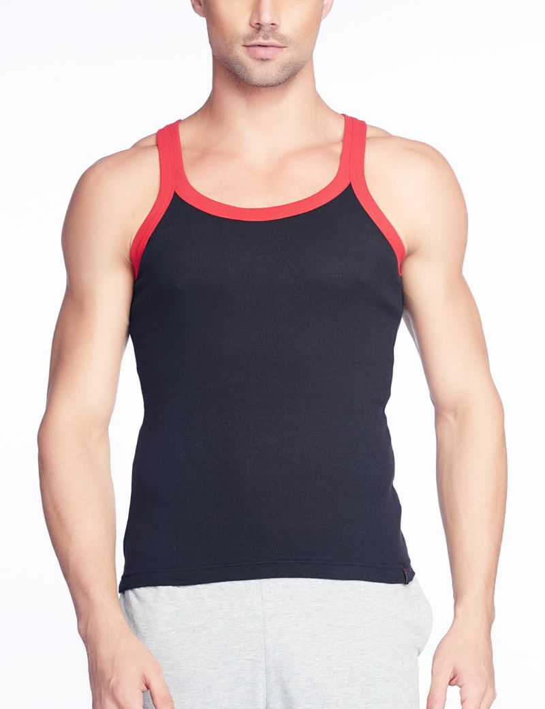

<!--
@license
Copyright (c) 2016 The Polymer Project Authors. All rights reserved.
This code may only be used under the BSD style license found at http://polymer.github.io/LICENSE.txt
The complete set of authors may be found at http://polymer.github.io/AUTHORS.txt
The complete set of contributors may be found at http://polymer.github.io/CONTRIBUTORS.txt
Code distributed by Google as part of the polymer project is also
subject to an additional IP rights grant found at http://polymer.github.io/PATENTS.txt
-->

<link rel="import" href="../bower_components/polymer/polymer-element.html">
<link rel="import" href="../bower_components/vaadin-material-theme/vaadin-grid.html">
<link rel="import" href="../bower_components/vaadin-grid/vaadin-grid.html">
<link rel="import" href="../bower_components/iron-ajax/iron-ajax.html">
<link rel="import" href="../bower_components/paper-checkbox/paper-checkbox.html">
<link rel="import" href="../bower_components/vaadin-grid/vaadin-grid-filter.html">
<link rel="import" href="../bower_components/vaadin-grid/vaadin-grid-sorter.html">
<link rel="import" href="../bower_components/vaadin-grid/vaadin-grid-selection-column.html">
<link rel="import" href="shared-styles.html">

<dom-module id="gird-layout">
    <template preserve-content>
    <style include="shared-styles">
      :host {
        display: block;

        padding: 10px;
      }
      .girdView { margin-top: 65px !important}
      .girdView img { width: 100%}
      
    </style>

    <div class="card girdView">
        <paper-checkbox checked="{{multiSort}}">Enable Multi-Sorting</paper-checkbox>
        <paper-checkbox checked="{{frozen}}">Freeze First Two Columns</paper-checkbox>
        <paper-checkbox checked="{{hidden}}">Hide First Two Columns</paper-checkbox>
            <iron-media-query query-matches="{{hidden}}" query="(max-width: 700px)"></iron-media-query>
        <vaadin-grid aria-label="Basic Binding Example" items="[[girdData.girdData]]" multi-sort="[[multiSort]]" active-item="{{activeItem}}" page-size="3">
            
            <!-- Expend row data -->
            <template class="row-details">
                <div class="details">
                  
                  <p>Hi! My name is vignesh!</p>
                </div>
              </template>
            <!-- Expand row data -->
            <vaadin-grid-selection-column auto-select>
              </vaadin-grid-selection-column>

            <vaadin-grid-column width="50px" flex-grow="0" frozen="[[frozen]]" hidden="[[hidden]]" resizable> 

            

              <template class="header">#</template>
              <template>[[index]]</template>
              <!-- If necessary, the footer could be set using <template class="footer"> -->
              <template class="footer">#</template>
            </vaadin-grid-column>

            <vaadin-grid-column frozen="[[frozen]]" hidden="[[hidden]]" resizable>
                <template class="header">Product Look</template>
                <template></template>
                <template class="footer">Product Look</template>
              </vaadin-grid-column>
      
            <vaadin-grid-column>
                <template class="header">
                    <vaadin-grid-filter aria-label="Product Name" path="title" value="[[_filterFirstName]]">
                      <input slot="filter" placeholder="Product Name" value="{{_filterFirstName::input}}" focus-target>
                    </vaadin-grid-filter>

                    
                  </template>
                
              
              <template>[[item.title]]</template>
              <template class="footer">Product Name</template>
            </vaadin-grid-column>
      
            <vaadin-grid-column>
                <template class="header">
                    <vaadin-grid-sorter path="price">Price</vaadin-grid-sorter>
                  </template>
              <template>RS. [[item.price]]</template>
              <template class="footer">Price</template>
            </vaadin-grid-column>

            <vaadin-grid-column>
                <template class="header">
                    <vaadin-grid-sorter path="description">Description</vaadin-grid-sorter>
                  </template>
                <template>RS. [[item.description]]</template>
                <template class="footer">Description</template>
              </vaadin-grid-column>
              <vaadin-grid-column>
                  <template>
                    <paper-checkbox aria-label="Select Row" checked="{{selected}}">Selected
                  </paper-checkbox></template>
                </vaadin-grid-column>

                <vaadin-grid-column width="100px">
                    <template class="header"></template>
                    <template>
                      <paper-checkbox aria-label$="Show Details for [[item.title]]" checked="{{detailsOpened}}">Show Details</paper-checkbox>
                    </template>
                  </vaadin-grid-column>

                  <vaadin-grid-column>
                      <template>
                        <div style="display: flex">
                          <button hidden="[[editing]]" on-click="_edit" focus-target$="[[!editing]]">Edit</button>
                          <button hidden="[[editing]]" on-click="_remove">Remove</button>
                          <button hidden="[[!_isEditing(editing, item)]]" on-click="_save" focus-target$="[[editing]]">Save</button>
                          <button hidden="[[!_isEditing(editing, item)]]" on-click="_cancel">Cancel</button>
                        </div>
                      </template>
                    </vaadin-grid-column>

              
      
        
      
          </vaadin-grid>
    </div>
    <div id="pages">
        <button on-click="_prev">&lt;</button>
        <template is="dom-repeat" items="[[girdData.girdData]]">
          <button on-click="_select" selected$="[[_isSelected(page, item)]]">[[item]]</button>
        </template>
        <button on-click="_next">&gt;</button>
      </div>
    <iron-ajax auto url="/data/mydata.json" params='{}' handle-as="json" on-response="getGirddata" debounce-duration="300"></iron-ajax>
  </template>

  <script>
    class GirdLayout extends Polymer.Element {
      static get is() { return 'gird-layout'; }
      static get properties() {
        return {
          GirdProductData: {
            type: Object,
            value: {}
          }
        }
      };

     
     
      getGirddata(event, Request) {
        this.GirdProductData = Request.response.products;
        this.girdData = this.GirdProductData.gird
        console.log(this.girdData)
      }
    }

    window.customElements.define(GirdLayout.is, GirdLayout);
  </script>
</dom-module>
